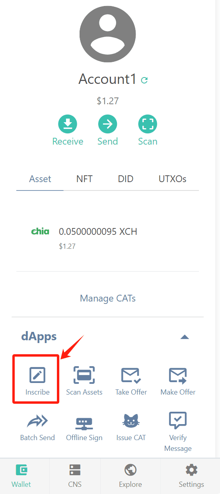

Introduction
XCHS is an inscription protocol on the Chia blockchain. It introduces a novel format by incorporating an account model into the UTXO-based Chia ecosystem. Diverging from inscription protocols on other blockchains, such as Bitcoin and Ethereum, XCHS leverages a unique feature in Chia - memos.
Features
- Information Value: Differing from solutions like smart contracts, L2, sidechains, etc., XCHS exists as a protocol inscription, aiming to not only strengthen but also streamline the value transmission of the first-layer blocks of Chia in an efficient and applicable manner.
- Distributed Confirmation: XCHS is implemented through Chia's memo system, bypassing the need for smart coins/contracts and avoiding the often complex ChiaLisp processes. It uses Chia's established regulations to handle memos, leveraging Chia's robust Satoshi coefficient to achieve expansive distributed message validation.
- Immutable: The core mission of XCHS is to foster decentralization, democratization, and fairness. It enables ordinary users to participate at nearly zero cost.
- Infinite Expansion: XCHS offers a more economical alternative to Non-Fungible Tokens (NFTs) in the Chia ecosystem. In the future, it also aims to present an economic alternative to the handling of complex and difficult Chialisp smart coins, thereby broadening opportunities for all users within the Chia blockchain.
Comparison
| Low Fee | Smart Contract | Account Model | |
|---|---|---|---|
| BTC | ❌ | ❌ | ❌ |
| BRC-20 | ❌ | ✅ | ❌ |
| ETH | ❌ | ✅ | ✅ |
| ETHS | ✅ | ✅ | ✅ |
| XCH | ✅ | ✅ | ❌ |
| XCHS | ✅ | ✅ | ✅ |
It's easy to discover that BRC-20 revolutionizes BTC by integrating smart contracts, while ETHS augments Ethereum with low fees. Given that XCH already boasts of low fees and superior Chialisp (smart contract). But it is still complicated for DEX to achieve high throughput due to the absence of an Account Model. However, the implementation of an Account Model in XCHS will truly make DeFi more captivating in XCH, like never before.
XSIP (XCHS Improvement Proposal)
All upcoming features will be implemented following the XSIP process, and no explicit roadmap is planned to be provided.
How It Works
- Only standard XCH addresses are valid receiving addresses. If you send to other types of addresses, they will not be recognized and will ultimately lead to losses.
- XCHS may not be compatible with current trading infrastructure, please use with caution.
- Although XCH is also based on the UTXO model like Bitcoin, there are some differences in detail. I won't go into detail here, but please note that the working methods with BRC-20 will be somewhat different.
- XCHS does not need to specially
minta one-time-use transfer inscription like in BRC-20, you can directly send fund with an inscription to the target address. - Only the first deployed ticker is effective, subsequent tickers with the same name will be ignored. Note that tickers are case insensitive, but you can write in your preferred style when deploying. The indexer can display this original name as needed.
- If by chance two
deployinscriptions appear in the same block, the first one will be taken as effective. - The validity of
mintis determined in the same way as deployment, first come first served. - Only
mintandtransferwill change the balance, while Deploy will not. - The user who exceeds the maximum value at the first
mintcan get the remaining amount. Anymintthat exceeds the maximum value afterwards will be invalid. - XCHS can be completely independent of XCH, that is, an account may not have any XCH but have a balance of XCHS. Furthermore, in wallets that support gasless, you can directly pay gas with XCHS to complete transactions.
- The maximum supply should not exceed the maximum value: 9007199254740991
- When
transferyour token in XCHS protocol, be sure to inscibe in the coin with correct sender address. Some wallet client might not properly select the correct coin. Nevertheless, even if the wrong sender address is used, your funds will not be lost; but the operation might be ineffective.
How to inscribe?
Easy way : Use Pawket to inscribe
-
Please prepare your Pawket wallet ( Download here) and ensure it contains a balance of at least 0.0005 XCH.
-
Click on the 'Inscribe' button at the bottom of the Pawket to enter the inscription page. 
-
Enter the Tick and Amount of the token you plan to inscribe(view the Deployed List.), such as "xchs" "1000", and fill in the Receiver Address (the default receiver address is the primary address of your wallet).

-
Choose an appropriate Network Fee. The Chia network supports zero-fee transactions, so you can choose not to fill this in, but doing so may cause longer transaction times. In case the network isn't congested, choosing a low/medium fee should suffice.
-
After signing in, Pawket will automatically calculate the cost of this inscription (including service fees paid to the wallet and network fees paid to the miners). Pawket charges a service fee of 0.0005 XCH for every inscription. Additionally, 1 mojo will be temporarily consumed as a cargo coin during the inscription process, but will return to your wallet afterwards, hence it does not count as part of the total cost.

-
After confirming that all the information is correct, submit and wait for confirmation on the blockchain.
Use Chia Client to inscribe
- Please prepare your Chia client and ensure that you have at least 1 mojo(which is 0.000000000001XCH) in your balance.
- On the send interface, enter your own address, input any amount of XCH (at least 0.000000000001XCH), as well as the network fee (which can be 0).
- Click on 'Add transaction memo', and type the following content like this(You can modify the content of 'tick' and 'amt' as needed):
{'p':'xchs','op':'mint','tick':'xchs','amt':'1000'}
- After checking all the above information for accuracy, click 'Send' to submit this transaction and wait for block confirmation.

How to 'Burn' It
Certainly you won't want to burn it, so here is the guide how you might burn it and try to avoid them.
transferXCHS funds to CAT address.- It's burned, and lost forever.
- Someone might get used to copy addresses from blockchain explorer, but please never copy the CAT address.
transferXCHS funds to random central exchange.- It depends, it might be dangerous.
- Until safe exchange protocol like offer or DEX is introduced, trading without any trust could prove perilous.
Safe Scenarios
Here listed some safe scenarios:
- Moving all XCH out of the account address.
- 🛡️ It's safe.
- You might need move some XCH back into this account to extract out these XCHS funds later.
- Inscribing a wrong inscription.
- 🛡️ It's safe.
- The catch is, this could end up being ineffective.
- Inscribing the
deploymore than once or after someone already deployed the same tick.- 🛡️ It's safe.
- But the later one have no impact. The limit or supply won't change since the very first deploy.
Protocol
- The inscription of XCHS is inscribed in the transfer Memo of regular XCH.
- The supported XCH transfer type is the standard XCH transfer type:
p2_delegated_puzzle_or_hidden_puzzle - Due to the limitations of Chialisp, there are slight differences compared to standard JSON: content must use single quotes
', and it is not allowed to have single or double quotes (',") within the content. - The content of XCHS in the Memo includes only simple inscription:
- Inscription: The content of the inscription. Please note to not include spaces, such as:
{'p':'xchs','op':'mint','tick':'xchs','amt':'1000'}
- Inscription: The content of the inscription. Please note to not include spaces, such as:
Deploy
In our documentation, we've chosen to use $XCHS as our example token. This is purely for demonstration purposes. However, the principles apply just the same to your chosen token. Just replace $XCHS with your token's name and you're good to go!
{
'p': 'xchs',
'op': 'deploy',
'tick': 'xchs',
'max': '21000000',
'lim': '1000'
}
| Key | Required? | Description |
|---|---|---|
| p | Yes | Protocol: Helps other systems identify and process XCHS events. |
| op | Yes | Operation: Type of event (Deploy, Mint, Transfer). |
| tick | Yes | Ticker: 4 letter identifier of the XCHS. |
| max | Yes | Max supply: set max supply of the XCHS. |
| lim | No | Mint limit: If letting users mint to themsleves, limit per mint. |
Mint
If you're using an inscription service, be cautious. Some tools might inscribe the token to their own address first, then forward it to you, the customer. This means that the balance initially lands with the inscription service's address.
{
'p': 'xchs',
'op': 'mint',
'tick': 'xchs',
'amt': '1000'
}
| Key | Required? | Description |
|---|---|---|
| p | Yes | Protocol: Helps other systems identify and process XCHS events. |
| op | Yes | Operation: Type of event (Deploy, Mint, Transfer). |
| tick | Yes | Ticker: 4 letter identifier of the XCHS. |
| amt | Yes | Amount to mint: Amount of the XCHS to mint. * |
*Amount: Has to be less than 'lim' if stated during the deployment.
Transfer
Attention, some wallet implementation generate a different address each time. Make sure to send to the address that holds the balance.
{
'p': 'xchs',
'op': 'transfer',
'tick': 'xchs',
'amt': '100'
}
| Key | Required? | Description |
|---|---|---|
| p | Yes | Protocol: Helps other systems identify and process XCHS events. |
| op | Yes | Operation: Type of event (Deploy, Mint, Transfer). |
| tick | Yes | Ticker: 4 letter identifier of the XCHS. |
| amt | Yes | Amount to transfer: amount of the XCHS to transfer. * |
*Amount: if the amount is exceeding account balance, then this transfer is invalid.
XSIP List
| ID | Status | Category | Proposal |
|---|---|---|---|
| 1 | LIVE | Consensus | XCHS Improvement Proposal |
| 2 | WIP | Consensus | Decentralized Indexer |
| 3 | WIP | Smart Contract | Flexible Smart Contract |
| 4 | WIP | Consensus | Exchange by Offer |
XSIP-1: XCHS Improvement Proposal
What are XSIPs?
Proposals for improvement to the XCHS protocol. More information about standards and processes to come. For now, the proposal format should similar to like EIP/CHIP.
XSIP-2: Decentralized Indexer
WIP
Abstract
The proposal seeks to establish a decentralized indexing mechanism for inscription data. The aim is to address the issues tied to centralized indexes that can expose a protocol to risk if the singular indexer experience any problems, potential falsely issuing tokens or even leading to overall protocol stagnation. Decentralized indexing brings about improved security, flexibility and efficiency that can, in turn, spur further activity and growth within the ecosystem.
Motivation
Presently, the structure of most inscription protocols relies heavily on centralized indexes. This concentration often resides with a single indexer or less commonly, a handful, proving inadequate for optimal performance and security. With data handled in off-chain servers, they make the protocol susceptible to vulnerability, disruption, and even falsification. The proposal to transition towards a decentralized indexing system stems from a need to strengthen security, boost operational efficiency, eliminate reliance on single entities, and foster organic growth within the ecosystem.
Specification
The implementation of the decentralized indexing mechanism will utilize the XCHS indexer, which is structured in the form of a blockchain, and we call it Inscription Chain. Dependence on Chia Network as the mainchain, consensus, security, and final confirmation will be provided by mainchain to the Inscription Chain. The XCHS indexer will act like Layer 2, but with a unique features that Chia is difficult to provide. Unlike typical Layer 2 implementation, all transactions are directly submitted to the mainchain instead of being aggregated by Layer 2. With this model, sometimes referred to as Layer 1.5, offers heightened security superior to Layer 2, and flexibility superior to Layer 1.
The Inscription Chain will incorporate an account model as its intrinsic ledger model. Such an implementation offers Chia a unique bolstering effect, laying the groundwork for versatile and feature-rich smart contracts.

From a technical view, the Inscription Chain will utilize Chia's Reward Chain to generate blocks. Each block is structured according to the following table:
| Field | Data Type | Description |
|---|---|---|
| Version | UInt16 | Version information pertaining to the block generation rules. |
| PrevBlockHash | UInt256 | Hash of the previous block in Inscription Chain |
| InfusionBlockHash | UInt256 | Reference to the hash of the Chia reward chain block hash. |
| InfusionBlockHeight | UInt64 | Indication of the height of the Chia reward chain from the genesis block. |
| WorldStateRoot | UInt256 | Hash representing the state of the blockchain after applying transactions in the block. |
| TransactionRoot | UInt256 | Root hash of the tree containing all transactions included in the block. |
| CoinRoot | UInt256 | Root hash of the tree containing all spent coins included in the block. |
- WorldStateRoot: Patricia Merkle Tree (hex tree) Root with SHA256 Hash
- TransactionRoot: Merkle Tree (binary tree) Root with SHA256 Hash
- CoinRoot: Merkle Tree (binary tree) Root with SHA256 Hash
Rationale
Various models for indexing are currently being utilized - centralized and open-sourced, multiple central providers with cross-verification. The inherent issues tied to these prior solutions necessitate a shift towards a truly decentralized indexing model. This model ensures data consistency and security, agility in protocol upgrades, and eases the indexing setup for ecosystem developers. Furthermore, this deters potential collusion among a few indexers. These considerations guide the design and adoption of a comprehensive decentralized indexing system.
In considering the techniques to implement decentralized indexing, inspiration comes from the inherent breakthrough that blockchain technology has offered. Constructing a sidechain could lay the groundwork for achieving decentralized indexing in a secure and expedient manner. This approach would allow the inscription data to be auditable and even reach consensus within the decentralized network, ultimately providing final confirmation ability. This notable feature leans into the primary advantage that blockchain provides — transparency and auditability, thereby heightening trust in the overall system.
Security Considerations
Adopting a decentralized indexing system improves security considerations in the following ways:
- It dispels the potential for concentrated collusion that can jeopardize data integrity.
- It encourages diverse participation, thereby diluting the risk pool.
- It's equipped with a standardized and open-source code that makes for straightforward checks and calibration, and low chance of bugs and vulnerabilities.
However, transitioning to this new model should be undertaken with care, ensuring meticulous testing and verification and observing potential unforeseen threats and risks. Any implementation must maintain a strong focus on preserving data security in all stages of the indexing process.
XSIP-3: Flexible Smart Contract
WIP
Abstract
TBD
Motivation
The Account Model presents several advantages over the UTXO Model. Here are some primary ones:
-
Simpler State Representation: The account model directly maintains account balances and smart contract states. This is more intuitive and easier to understand compared to UTXO's system of tracking unspent transaction outputs.
-
Smart Contract Flexibility: The Account Model, gives much more power and flexibility to developers. Allowing for more complex processes and applications to be created.
-
Reduced Space Complexity: Accounts model only needs to keep track of the final state of accounts (each account's balance and associated smart contracts), while UTXO model has to maintain all the unspent transaction outputs across the entire network.
-
Ease of Transaction Writing: In the UTXO model, a transaction has to consume all the funds held in a UTXO, and if not all funds are spent, a change address must be specified. Whereas, in the Account Model, funds can be transferred directly from one account to another without the need to consume all the funds all at once.
Specification
TBD
Rationale
Programming Language
TBD: Lisp with I/O Monad
Security Considerations
TBD
XSIP-4: Exchange by Offer
WIP
Abstract
This proposal seeks to redefine and fine-tune Offer with new primitives that enhance both security and operability. Offer permits decentralized trading of assets directly, utilizing a mechanism reminiscent of BRC20's design. However, it can lead to irrevocable financial loss if implemented incorrectly, especially when interacted with incompatible wallets. To address these issues, we propose three primitives: 'Inscribe', 'Transmit', and 'Reclaim'. 'Inscribe' is to bind a certain amount of funds to a created UTXO coin from the sender's balance. Once inscribed, the funds can only be moved using this specific coin. 'Transmit' offers the exclusive method of transmitting inscribed funds out of UTXO. If improper construction occurs, funds can only be reclaimed through a 'Reclaim' operation. This XSIP aims to maximize Offer's potential, mitigate the risk of loss, and increase users' control over their funds by providing the ability to rectify mistakes and reclaim lost funds.
Motivation
Offer is a unique feature provided by Chia, allowing direct asset trades with others in a decentralized manner. For instance, we can put forth an offer inviting someone to trade their Chia for our new token, which then can be accepted by any party.
When it comes to inscription trading within the context of offers, security is achieved by binding a specific amount of inscription tokens to one UTXO coin. In essence, the inscription token can be transferred only when the UTXO coin is spent. This design ethos is reminiscent of the BRC20 protocol. However, the BRC20 protocol reveals a significant shortcoming: if the spending is improperly constructed, such as by an incompatible wallet, the funds may be irretrievably lost.
Therefore, within this XSIP, we propose defining two primitives, reminiscent of BRC20's two-stage transfer. Importantly, we introduce an additional primitive to reclaim funds that may be lost due to incorrectly structured spent coins. In doing so, we aim to not just rectify existing issues but also to introduce new levels of flexibility and security to XCHS.
Specification
Note: The fields p, op, tick will follow the definitions set by the base protocol and will not be further detailed herein.
Inscribe
The 'Inscribe' operation entails allocating a specific amount of funds from the sender's balance to a created UTXO coin. Following inscription, the fund amount will be relocated from a particular account to this UTXO coin, and subsequent operations to transmit these funds can only utilize this coin.
{
'p': 'xchs',
'op': 'inscribe',
'tick': 'xchs',
'amt': '1000'
}
| Key | Required? | Description |
|---|---|---|
| amt | Yes | Amount to inscribe: Amount of the XCHS to inscribe to target coin |
Transmit
'Transmit' signifies the exclusive method to extract funds from the inscribed UTXO coin.
If an inscription instruction is incorrectly constructed and the coin is spent, the reclaim operation stands as the sole avenue to retrieve your funds.
{
'p': 'xchs',
'op': 'transmit',
'tick': 'xchs'
}
Reclaim
'Reclaim' operation aids in recovering your funds if the inscribed coin is spent without the correct inscription instruction. Although this operation is heavy, it ensures the safety of your funds from unsophisticated wallet software execution.
{
'p': 'xchs',
'op': 'reclaim',
'tick': 'xchs',
'coin': 'fca28aa50c89aaa5f7dc40b7f94e1635d070c9f83be52a2f2be0bf9bf8617285',
'height': '4700101',
'idx': '456',
'path': [
'e98be068d742b009af509f807d1b6a00a36b73a88aeb074ab40750eb66101aa0',
'60c20d176b7901447a618e5269c69402a5b5d09e4a7ec7402ff568f2138ee46e',
'60b9bcaca73d68f3288b9aeec079b165d744bc636e71caa1e8ea1003dbeeee6d',
'02055edbd965f9d49fd95e1822249a9efdb6d9ff4c1e1c71d428656193577b77',
'5857bd486c4bdcc437a73f77c2245db81da518197d4d0c2cc5f0965ad22c6635'
]
}
| Key | Required? | Description |
|---|---|---|
| coin | Yes | the coin which is spent and still hold inscribed funds |
| height | Yes | the block height where the spent coin is located |
| idx | Yes | the index of the spent coin within the merkle tree |
| path | Yes | the path to prove the coin's inclusion within the merkle tree |
Rationale
Transfer vs Inscribe
Within the BRC20 protocol, users are required to execute a 'transfer' twice.
Initially, they transfer to their account in preparation, followed by a genuine transfer to a specific recipient.
XCHS circumvents this double-transfer necessity by using the account model, but the downside is that peer-to-peer trading, like Offer mechanism, cannot exclusively guarantee successful trading.
Thus, the two-stage 'transfer' is still a requirement.
However, XCHS has endowed 'transfer' with the notion of a straightforward fund transfer, which is why we've designed this XSIP with a two-stage 'transfer', embodied in the inscribe and transmit operations.
Security Considerations
Offer
Offer is a mechanism provided by the Chia Network, designed to ensure a trade only occurs when both parties requirements are satisfied. To ensure this mechanism's seamless operation with XCHS, under the account model, we propose this XSIP to secure the inscription's binding to a specific coin.
Funds loss
In BRC20, fund losses occasionally occur, especially when an incompatible wallet is handling these funds. Users were expected to absorb these losses with no chance to reclaim them. This vulnerability led to the design of the reclaim operation. The reclaim operation equips users with a tool to address such situations and guard against unnecessary losses.
About Us
Unimojo is the initiator and proponent of XCHS, having built the first inscription and trading platform on the XCHS protocol.